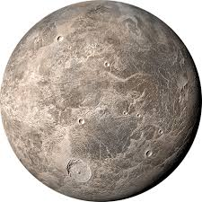
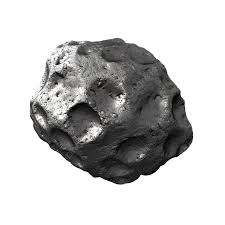
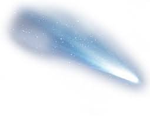
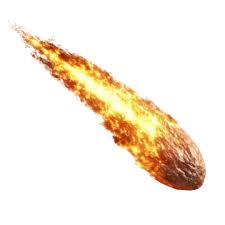

Solar System |
Celestial bodies in our solar system include stars such as the sun, planets and dwarf planets, and comets and asteroids. The smallest Celestial body in our solar system are Interplanetary Dust Particles which are made from pieces of astroids or other objects. The largest Body in our solar system is The Sun with a diameter of roughly 1,450,000 kilometers and can fit roughly 1.3 million earths in it.
Dwarf PlanetsDwarf planets are celestial bodies that orbit the Sun and are similar to regular planets but don’t clear their orbit of other objects. Famous examples include Pluto, Eris, and Ceres. They are spherical in shape due to gravity but are often smaller than the main planets. Most dwarf planets are found in the Kuiper Belt, beyond Neptune. Pluto, once considered the ninth planet, was reclassified as a dwarf planet in 2006. These mysterious worlds may have icy surfaces, moons, and even underground oceans, making them exciting targets for future space missions. |
 |
AstroidsAsteroids are rocky, airless objects that orbit the Sun, mostly found in the asteroid belt between Mars and Jupiter. They vary in size from small rocks to objects hundreds of kilometers wide. Unlike planets, asteroids are too small to be round and often have irregular shapes. Some asteroids may have moons or even rings. Scientists study asteroids because they are leftovers from the early solar system and can help us understand how planets formed. Occasionally, an asteroid may come close to Earth, which is why space agencies keep a close watch on them. |
 |
CometsComets are icy celestial objects that orbit the Sun in long, elliptical paths. They are made of dust, rock, and frozen gases like water and carbon dioxide. When a comet gets close to the Sun, its ice vaporizes, forming a glowing head (coma) and a tail that always points away from the Sun due to solar wind. Comets are often called "dirty snowballs" and come from the distant Kuiper Belt or Oort Cloud. Famous comets like Halley’s Comet can be seen from Earth when they pass by, offering a beautiful and rare cosmic show. |
 |
MeteriodsMeteoroids are small rocks or particles in space, usually formed from comets or asteroids. When a meteoroid enters Earth’s atmosphere and burns up, it becomes a meteor, often seen as a shooting star. If part of it survives the trip and lands on Earth, it’s called a meteorite. Meteoroids can be as small as grains of sand or as large as boulders. Meteor showers occur when Earth passes through a trail of debris left by a comet, lighting up the sky with many meteors at once — a breathtaking natural event! |
 |
Designed and developed by Ishika Ahuja 6G